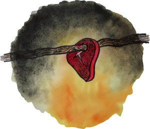
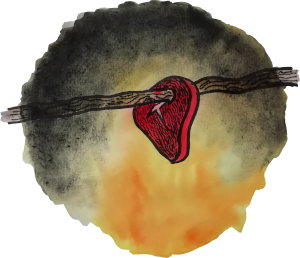

Příběh civilizace je víkendová akce, kde se svým týmem povedete svůj kmen od prvního ohně a... ke hvězdám? K zářným zítřkům? Prosperitě? Zániku či věčné slávě? Od pátku do neděle bude probíhat strategická metahra, ve které budujete vlastní kulturu, za쮂셨치te radost z objevování a rozvoje. Tato strategie je inspirovaná počítačovou hrou Civilizace od Sida Meiera.
Ovšem na rozdíl od této legendární hry neprosedíte celý víkend před obrazovkou. Příběh civilizace probíhá nad mapou i v terénu. Čekají vás chvíle plánování i události plné pohybu.
Proč pou쮂셨치me pojem metahra? Proto쬰 kromě strategického rozhodování váš tým musí hledat lo쬴ska surovin, plnit úkoly přinášející nové objevy a technologie, budovat infrastukturu atd. A samozřejmě, čím rozvinutější civilizace, tím víc mo쬹ostí a výzev. Výsledek ovšem není dopředu daný a na vás bude záviset, jakou cestou se vydáte.
Hra není určená pouze pro stratégy. Historie nás učí, 쬰 úspěch ka쬯칠 civilizace závisí i na schopných konstruktérech, zdatných obchodnících i pracovitých dělnících. Pokrok není zadarmo a musí být vykoupen úsilím celého týmu.
Kromě komplexní strategie je Příběh civilizace také experiment. I pro nás je to nový programový formát. Víme, jak to začne, ale ani jako tvůrci nedok치쬰me předpovědět konec. Ten bude zále쬰t na vás hr치캜칤ch, na vaší vynalézavosti, dovednostech, diplomatických schopnostech a na vašich rozhodnutích.
Pokud vás Příběh civilizace láká, tak nezbývá ne za쬰hnout oheň a vyrazit na společnou cestu.